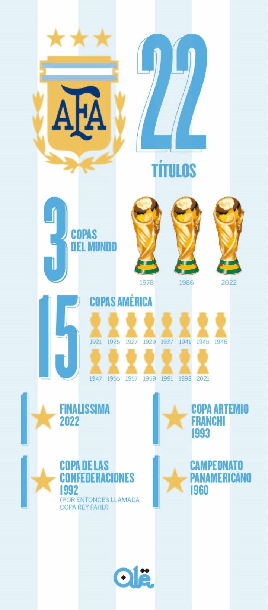

Biografía
La Selección Argentina de Fútbol, conocida como “La Albiceleste”, representa a la República Argentina en las competencias internacionales de fútbol organizadas por la Asociación del Fútbol Argentino (AFA), la Confederación Sudamericana de Fútbol (CONMEBOL) y la FIFA. Fundada formalmente con la creación de la AFA en 1893, jugó su primer partido internacional oficial el 20 de julio de 1902, enfrentando a Uruguay con una victoria por 6-0 en Montevideo. Desde entonces, ha sido protagonista en la historia mundial del fútbol y considerada una de las grandes potencias internacionales.
Logros
- 3 Copas del Mundo: 1978, 1986, 2022
- 16 Copas América: 1921, 1925, 1927, 1929, 1937, 1941, 1945, 1946, 1947, 1955, 1957, 1959 (I), 1991, 1993, 2021, 2024
- 1 Copa FIFA Confederaciones: 1992
- 2 Finalissima/Copa Artemio Franchi: 1993, 2022
- 1 Campeonato Panamericano: 1960
- Subcampeonatos mundiales: 1930, 1990, 2014
La Selección Argentina ostenta el mayor número de títulos oficiales en la historia del fútbol de selecciones absolutas.
Además, es el país que más veces ganó la Copa América, despegándose de Uruguay, y se convirtió recientemente en bicampeón de América tras ganar la Copa América 2024 en Estados Unidos. Bajo el ciclo de Lionel Scaloni, el equipo conquistó cuatro títulos en menos de tres años.
Galería
Existen miles de imágenes y álbumes que ilustran la rica historia argentina, incluyendo momentos cumbre como los festejos de la Copa del Mundo 2022 y la Copa América 2024, así como fotos oficiales de plantillas históricas y celebraciones.